Day 25｜100km 石碑、捨不得的過程
2026 年 6 月 14 日 · Samos → Portomarín · 38km
摸黑離開 Samos 小鎮，鑽進漆黑的森林小徑，心臟真的要很大顆——幾隻野狗突然衝出來狂吠，還好我們有結伴，野狗看人不只一個也不敢靠近。這時候深刻體悟到夥伴的重要性，大清早直接驚嚇醒腦。
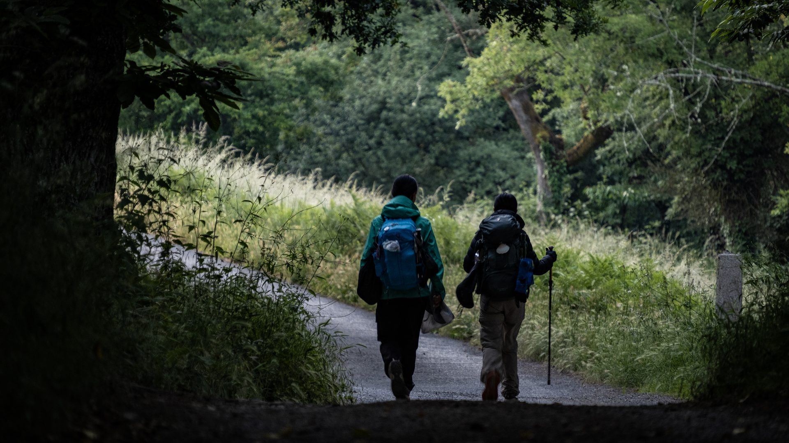
今天是第 25 天，38 公里，爬升 718 公尺，一點都不輕鬆。但走到這裡，問題早就不是「我能不能走到聖地牙哥」，而是「走到終點之後，然後呢？」這條路已經成了日常，看著里程數倒數，反而開始捨不得結束了。
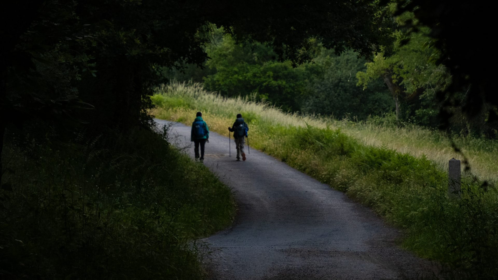
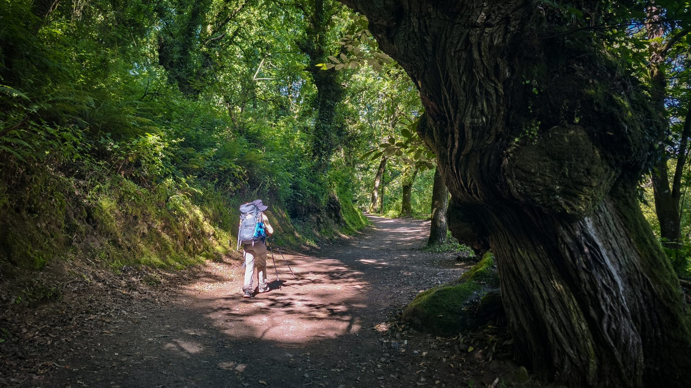
走著走著，在轉角咖啡店巧遇昨晚同住的台灣大姊，異鄉重逢超開心！年齡對她真的只是數字，7 字頭還活力滿滿。她笑說這趟最難的根本不是徒步，而是第一次跑這麼遠、自己搞定機票跟交通——不知不覺竟然也走了快 700 公里！帶著這份讓人佩服的正能量一路聊著，我們正式踏入大站 Sarria。
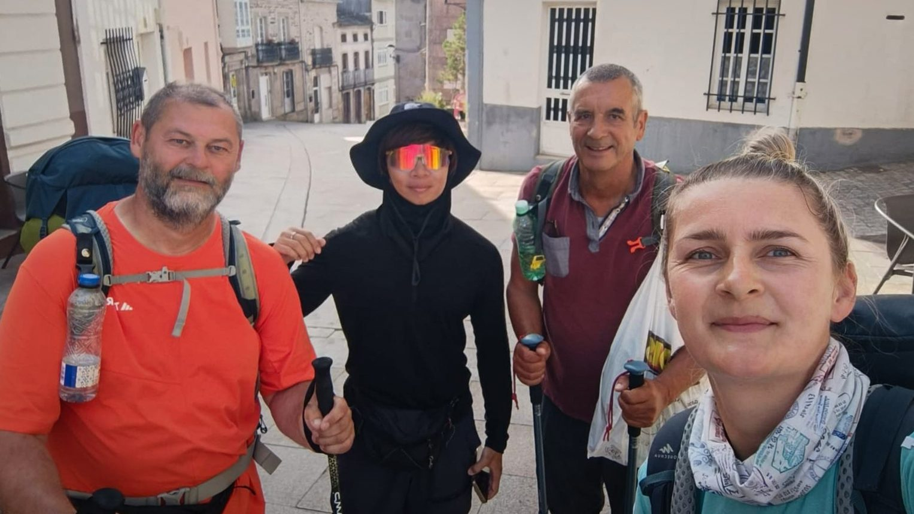
一進到 Sarria，你會明顯感覺整條路突然「熱鬧」了起來！很多人特地把這裡當作起點，專攻最後這一百公里。為什麼是一百公里？因為這是申請傳統朝聖證書的最基本門檻：徒步要滿一百公里，單車則要兩百公里，而且每天至少要蓋滿兩個章。這可不是隨便買得到的紀念品，而是一份專屬的拉丁文官方證明，代表你真的用雙腳走到了聖地牙哥。對很多人來說，從 Sarria 出發的這段路，就是一趟專屬的「證書解鎖之旅」！
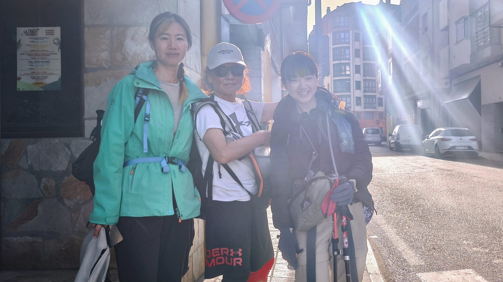
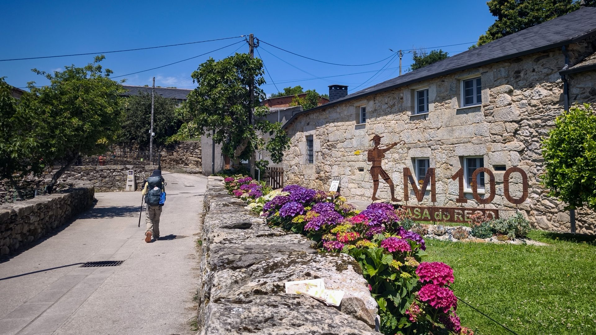
看著 100 公里石碑，心情出奇地平靜。當初怕走不完，現在只覺得驕傲——原來自己走了這麼遠。距離聖地牙哥教堂，只剩最後一百公里了！
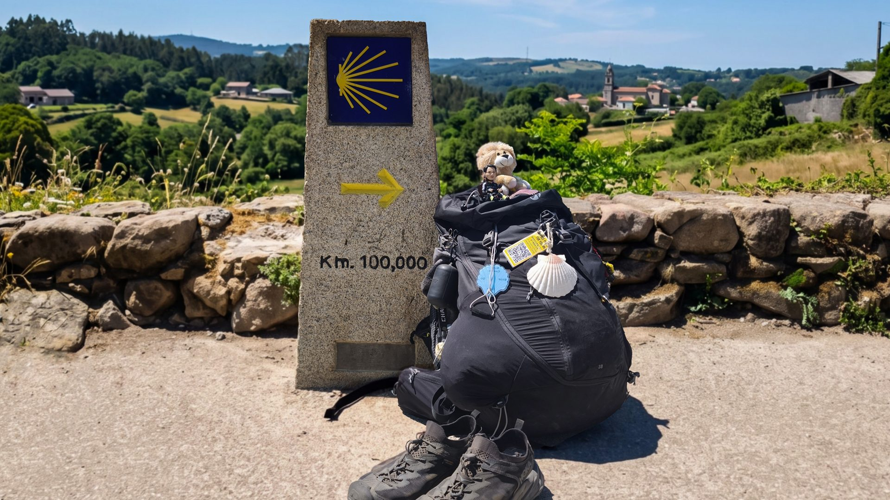
順著指標繼續走，我們終於抵達今天的大站 Portomarín。眼前橫跨河流的壯觀長橋，風景美得像幅畫。不過要真正進城，還得先爬上這座歷史悠久、考驗大腿的好漢坡石階——今天的最後試煉！
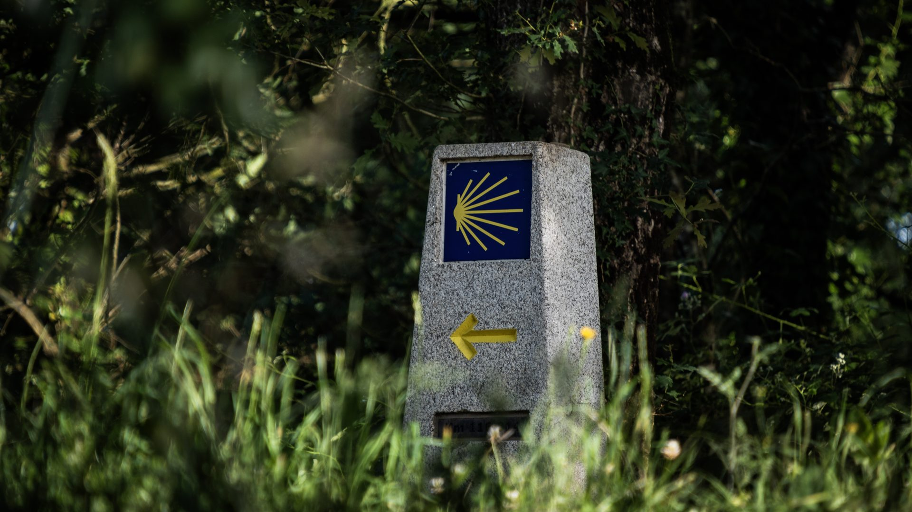
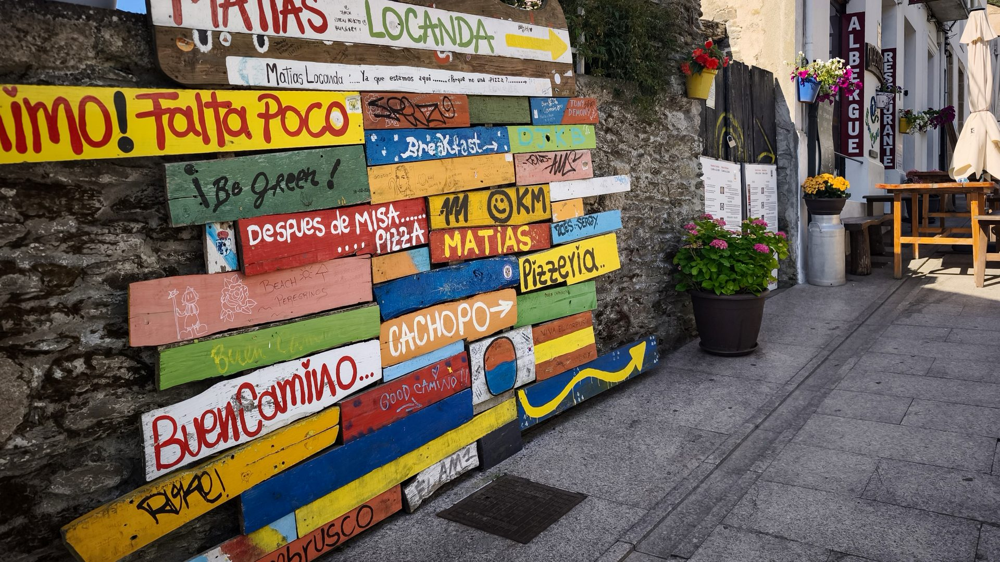
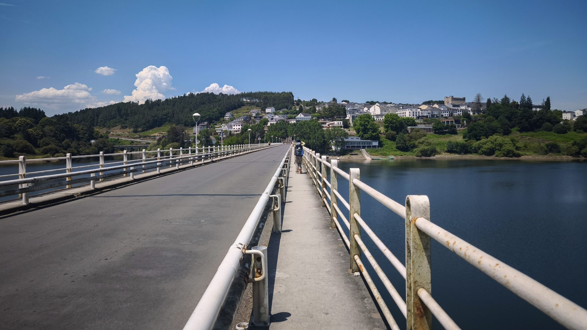
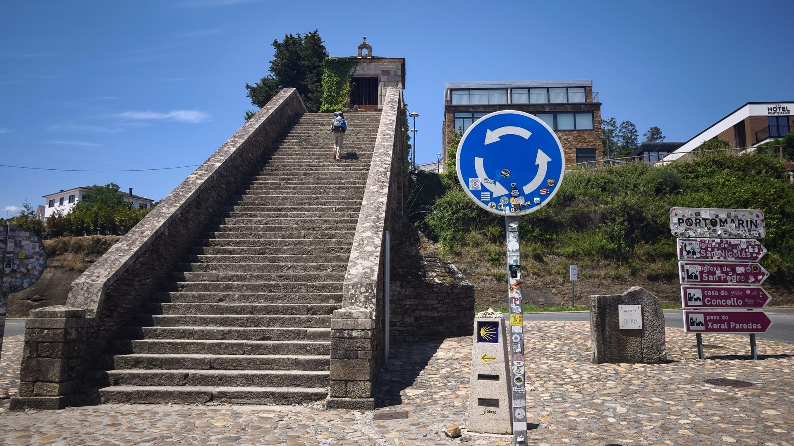
今天一口氣走了 38 公里，站在小鎮中心的聖尼古拉教堂前。這座教堂曾經沉入水底，是當地人一磚一瓦拆下來、搬到現在的高地上重新組裝的，簡直是建築奇蹟！晚上別忘了參加晚禱，收集這個超美的專屬印章。
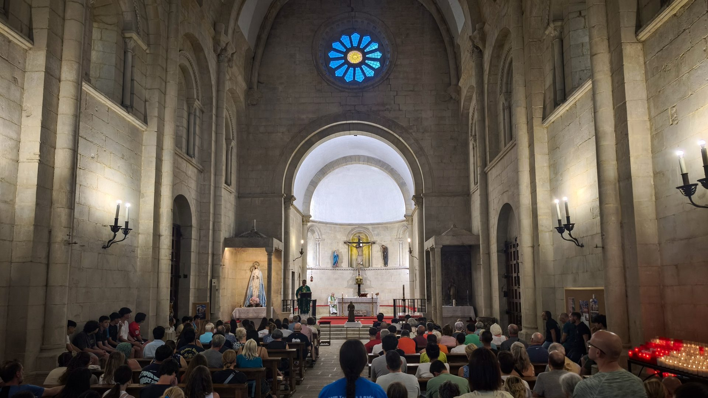
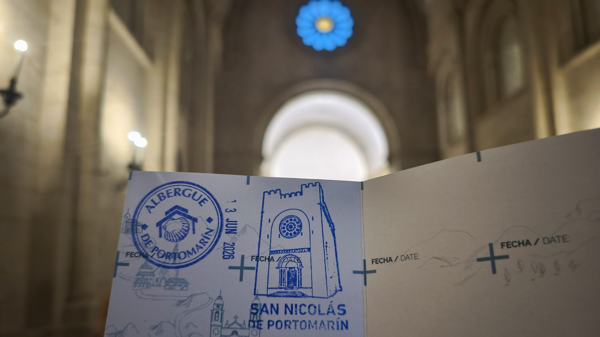
📚 朝聖者小百科：Sarria 與 Portomarín
薩里亞（Sarria）是最後 100 公里的非官方起點。想拿朝聖證書（Compostela），徒步至少要走滿 100 公里、單車 200 公里，且每天至少蓋兩個章——所以很多人專程飛來 Sarria，只走最後這一段，路從這裡開始變得熱鬧又擁擠。
波爾托馬林（Portomarín）是一座被水淹沒又重新站起來的城鎮。1960 年代 Miño 河建造水壩時，整個舊城被水庫淹沒，最重要的聖尼古拉斯教堂被一塊塊石頭拆下編號，搬到高處重新組裝。走在教堂裡，還能找到石頭上當年的編號；水庫水位低時，舊城遺跡會從水中浮現。
🪨 Km. 100,000 石碑：剩最後一百公里，記得合照
🏛️ 教堂石頭上的編號，是整城搬遷留下的記號
🥾 38km · 爬升 718m，倒數開始捨不得的一天
| 自由捐贈（畫、章） | €0.5 |
| 自由捐贈住宿 | €15.0 |
| 合計 | €15.5 |
🎬 對應 Vlog EP7｜最後 100 公里：Samos → Santiago 五天全紀錄